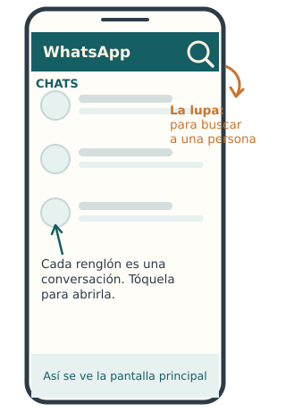
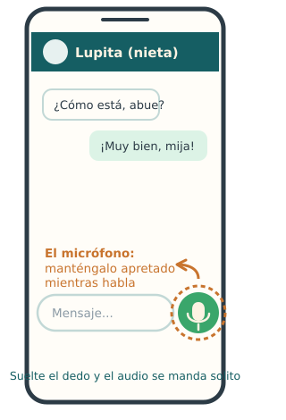
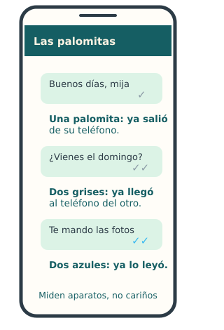

Parte 1
WhatsApp
paso a paso
◆ ◆ ◆
"Despacito y bien:
al celular se le pierde el miedo usándolo."
Lección 1 · Conocer la pantalla sin miedo
Para saber dónde está parada cada cosa.
- Busque en su teléfono el círculo verde con un teléfonito blanco: ese es WhatsApp. Tóquelo una vez.
- Lo que aparece es la lista de CHATS: cada renglón es una conversación con una persona o un grupo. Arriba están las más recientes.
- Arriba hay una lupa : sirve para buscar a una persona escribiendo su nombre.
- Toque cualquier renglón y se abre la conversación; para regresar a la lista, toque la flechita de arriba a la izquierda (o el botón de regresar de su teléfono).
Recuerde: tocar y mirar no manda nada ni rompe nada. Pasee por la pantalla con confianza, como quien recorre una casa nueva.

La pantalla principal de WhatsApp, con calma y con flechas.
Lección 2 · Mandar un mensaje escrito
Para saludar, preguntar, contestar: el pan de cada día.
- En la lista de chats, toque el nombre de la persona.
- Toque el renglón blanco de abajo (donde dice "Mensaje" o "Escribe un mensaje").
- Aparece el teclado: escriba con calma. Si se equivoca, la tecla de borrar (una flechita con un tache) quita la última letra.
- Para mandar, toque la flechita verde que está junto al renglón. ¡Listo! Su mensaje aparece en la conversación, del lado derecho.
Tip: las cositas amarillas (los "emojis") están en la carita que aparece junto al renglón de escribir. Un corazón o una florecita alegran cualquier mensaje.
Lección 3 · Mandar un mensaje de voz (audio)
Para platicar sin batallar con el teclado.
- Abra la conversación de la persona.
- Junto al renglón de escribir hay un micrófono.
- Manténgalo apretado (no lo suelte) y hable con voz normal, como si dejara recado.
- Cuando termine de hablar, suelte el dedo: el audio se manda solito.
- ¿Le salió mal? Sin soltar, deslice el dedo hacia la izquierda y se cancela, como si nada.
Tip: si va a hablar largo, deslice el micrófono hacia arriba al empezar: se queda grabando sin tener el dedo apretado, y manda con la flechita verde al terminar.

El micrófono vive junto al renglón de escribir.
Lección 4 · Mandar una foto
Para presumir los tamales, el jardín o a los nietos.
- Abra la conversación de la persona.
- Junto al renglón de escribir busque el clip o el signo de más (+); tóquelo.
- Toque "Galería" para mandar una foto que ya tiene tomada (o la cámara para tomarla en ese momento).
- Toque la foto que quiere — le aparece una palomita o se pone grande —.
- Si quiere, escriba un mensajito abajo ("Mire qué bonitas se dieron"), y toque la flechita verde para mandar.
Tip: puede tocar varias fotos y se mandan todas juntas de un jalón.
Lección 5 · Hacer una videollamada
Para ver a los suyos aunque estén del otro lado del mundo.
- Abra la conversación de la persona (asegúrese de que sea la correcta).
- Arriba a la derecha hay dos botones: un teléfono (solo voz) y una camarita (con video).
- Toque la camarita y espere; está sonando del otro lado.
- Cuando contesten, ahí están: usted los ve y ellos a usted. Hable normal, no hace falta gritar.
- Para terminar, toque el botón rojo. Como colgar el teléfono de antes.
Tip: si se ve usted muy oscuro, póngase de frente a una ventana, no de espaldas. Y si no se oye, revise que no tenga tapado el micrófono con el dedo: nos pasa a todos.
Lección 6 · Contestar llamadas y videollamadas
Para no quedarse viendo el teléfono sonar.
- Cuando le llamen, la pantalla se enciende con el nombre de quien llama.
- Aparece un botón verde y uno rojo. En muchos teléfonos hay que deslizar el verde (arrastrarlo con el dedo), no nomás tocarlo.
- Verde = contestar. Rojo = colgar o no contestar.
- Si no alcanzó a contestar, no se apure: en la lista de chats quedará el aviso de "llamada perdida"; toque el teléfono y devuélvala.
Importante: si le videollama un número desconocido, no conteste. Los conocidos llaman desde su chat de siempre, con su nombre.
Lección 7 · Las palomitas: ¿me leyeron o no?
Para entender esas marquitas junto a sus mensajes.
- Una palomita ✓: su mensaje ya salió de su teléfono.
- Dos palomitas ✓✓: ya llegó al teléfono de la otra persona.
- Dos palomitas azules: ya lo leyeron.
- ¿Dos palomitas grises por horas? No se ofenda: la gente trae el teléfono en la bolsa, sin pila o en el trabajo. Las palomitas miden aparatos, no cariños.
Tip: hay personas que apagan las palomitas azules; con ellas nunca se ven, aunque ya lo hayan leído. Otra razón para no hacer corajes por palomitas.

Las tres palomitas, lado a lado.
Lección 8 · Guardar un contacto nuevo
Para que la gente aparezca con su nombre y no como número.
- Cuando le escriba un número nuevo (digamos, la nuera nueva o el doctor), abra ese chat.
- Toque el número de teléfono que aparece arriba.
- Busque la opción "Agregar a contactos" o "Crear contacto nuevo".
- Escriba su nombre como usted le dice ("Doctor Ramírez", "Lupita nieta") y guarde.
Ojo de águila: que alguien le escriba "soy tu nieto con número nuevo" NO es razón para guardarlo. Primero confirme por otro lado (lección de la Parte 2). Los vivales usan justo ese truco.
Lección 9 · Silenciar el grupo de la familia
Para que el grupo de los primos no lo despierte a medianoche.
- En la lista de chats, mantenga apretado (un segundo, sin soltar) el renglón del grupo.
- Busque arriba el dibujito de una campana tachada (o la opción "Silenciar").
- Escoja "8 horas", "1 semana" o "Siempre".
- Listo: los mensajes siguen llegando y usted los lee cuando guste, pero el teléfono ya no suena a cada chiste del compadre.
Tranquilidad: silenciar no es salirse del grupo ni desairar a nadie. Nadie se entera. Es solo bajarle el volumen a la fiesta.
Lección 10 · Borrar un mensaje mandado por error
Para cuando el mensaje se fue al chat equivocado. A todos nos pasa.
- Mantenga apretado el mensaje que quiere borrar (el suyo).
- Toque el botecito de basura (o la opción "Eliminar"; a veces está en los tres puntitos ⋮).
- Aparecen dos opciones. La importante es "Eliminar para todos": lo borra también del teléfono del otro.
- "Eliminar para mí" solo lo borra de SU pantalla; el otro sí lo verá. Para los errores penosos, siempre "para todos".
Ojo: "Eliminar para todos" funciona si lo hace pronto (tiene hasta un par de días). El otro verá un avisito de "se eliminó este mensaje" — misterioso, pero mejor que el mensaje equivocado.
Lección 11 · Mandar su ubicación a alguien de confianza
Para que un hijo sepa dónde está usted, con un solo toque.
- Abra el chat de la persona de confianza (hijo, hija, hermana).
- Toque el clip o el más (+) junto al renglón de escribir.
- Toque "Ubicación".
- Escoja "Enviar mi ubicación actual": le llega un mapita con el punto exacto donde está usted.
- Si va a andar fuera un rato, "Ubicación en tiempo real" deja que lo acompañen en el mapa durante el tiempo que usted elija.
Para taxis y citas médicas: esta es la herramienta de oro. "Aquí estoy, vengan por mí", sin explicar calles.
Lección 12 · Poner la letra más grande
Para leer sin andar pidiendo los lentes a cada rato.
- En WhatsApp, toque los tres puntitos ⋮ (arriba a la derecha) y luego "Ajustes" o "Configuración". En iPhone, "Configuración" está abajo a la derecha.
- Toque "Chats".
- Busque "Tamaño de fuente" y escoja "Grande".
- ¿Quiere TODO el teléfono con letra grande? Eso se hace en los Ajustes del teléfono (no de WhatsApp): busque "Pantalla" y luego "Tamaño de fuente". Pida ayuda a un nieto una sola vez, y queda para siempre.
Bonito y útil: con la letra grande, todo este libro de WhatsApp se disfruta el doble. Sus ojos se lo van a agradecer.